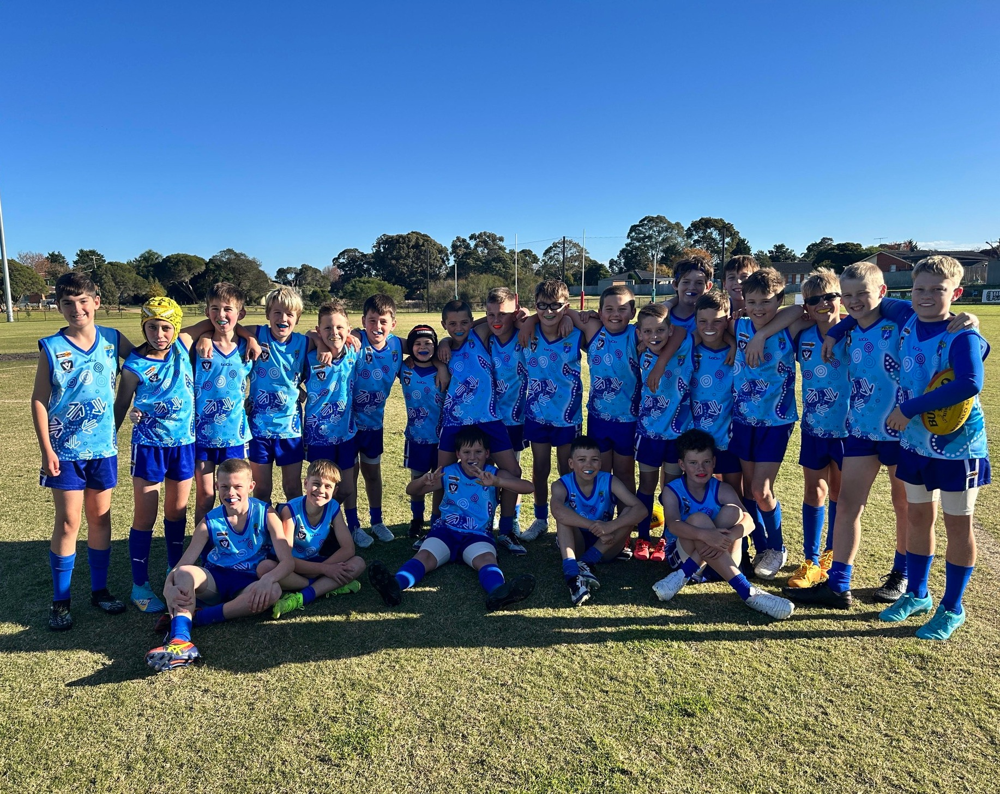
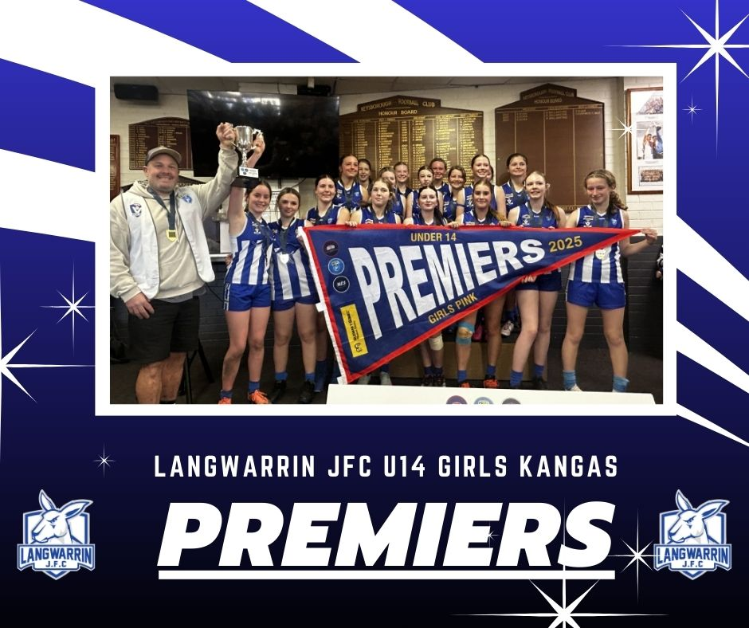

The Langwarrin Junior Football Club provides a safe and fun environment for all aspiring junior Aussie Rules footballers. Established in 1925, we are now one of the largest junior football clubs in Australia.
Our history
Langwarrin Junior Football Club was established in 1925 and won its first premiership in 1929. Since then the club has gone from strength to strength and has built a culture of togetherness and commitment.
Today Langwarrin Junior Football Club is recognised as one of the largest football clubs in Australia with over 700 junior and senior players, across all age groups, including a growing number of girls' teams. In 2025, LJFC had its most successful season on field, taking home 9 premierships.
Our mission
Langwarrin Junior Football Club is about nurturing and developing its juniors and retaining its players right through the junior program.
The club plays in the Frankston & District Junior Football League. We have teams from Under 8s and all age groups up to and including the Under 17s and U18 Girls competition. Games are played on a Sunday at grounds from Mordialloc in the north to Mt Eliza in the south for teams up to and including the Under 12s. The Under 13 to U18 grades can play games down on the Mornington Peninsula.

Girls football at LJFC
Our girls-only football began at Langwarrin Junior Football Club in 2014 when the FDJFL introduced two all-girls competitions, Junior Girls (U13s) and Youth Girls (U18s). A team of dedicated committee members and volunteers put in a lot of time and effort to support the girls as many of them played football for the first time.
AFL South East is the first league/region to have a full pathway of girls and women's football, and LJFC is one of only four clubs in 2025 to have teams in all the girls' age groups U8–U18.

Our future
Boasting strong junior numbers and a young and emerging seniors team playing finals, the club has high hopes of a strong future. The sheer number of quality young players coming through the system is a foundation that most clubs can only dream about.
Our committee
Brad McNeilage
President & League Delegate
Wes Porter
Vice President
Paul Muddiman
VP Football Operations
Kate Smith
Secretary
Lauren Scott
Treasurer
Kim McVarnock
Registrar